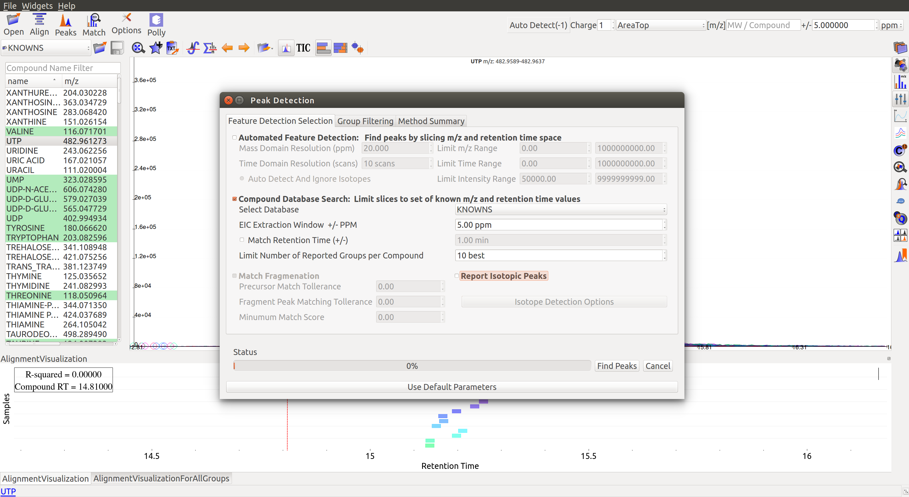
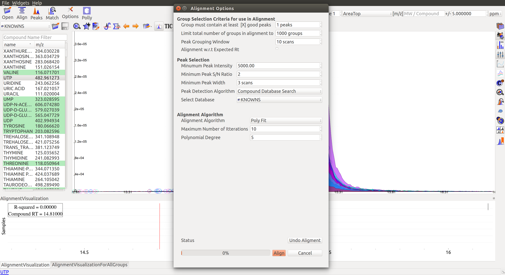
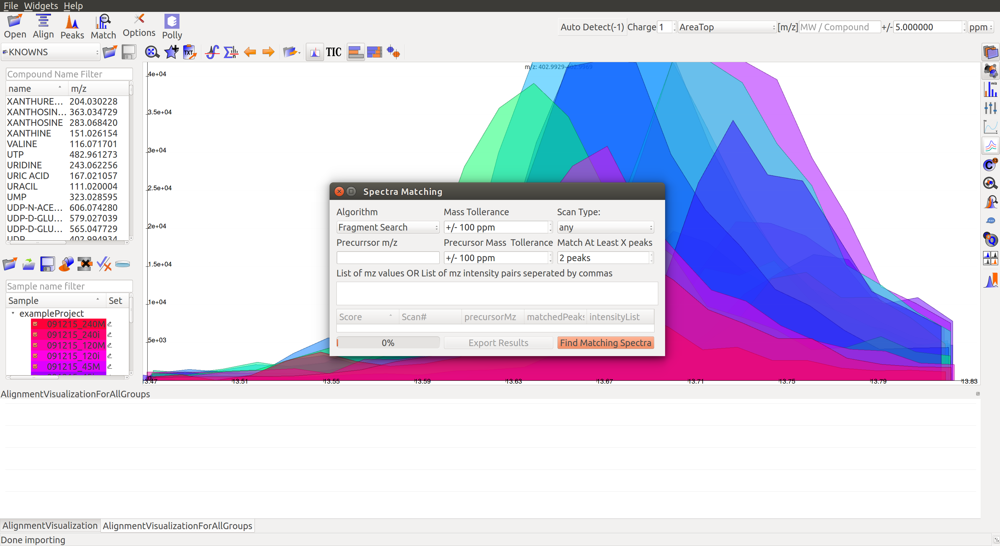

Issues
- All screenshots have to be updated.
- Show Sample Widget (F2) shortcut does not work in Windows. Other shortcuts work though.
- Difficult to move the Sample Space tab to a different location. Can only be moved if the cursor is at the top above the icons.



- Compund database (default) version difference!
- Ubuntu has 2
- Windows has 7
- Unlabeled LC-MS Workflow
- Peaks are not seen just by loading the samples.
- Click on Peaks. And then Automated Feature Detection.
- Mention that some default compound databases are already loaded in El-MAVEN.
- Format for creating your own compound database. Different for MS and MS/MS.
- Alignment
- Loess fit does not work
- When no good peaks are found, there is a message saying 0 good peaks found. No message when alignment is successful.
- Automatic Peak Curation?
- Labeled LC-MS/MS Workflow
-